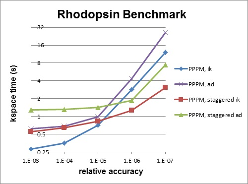

6. Accelerating LAMMPS performance¶
This section describes various methods for improving LAMMPS performance for different classes of problems running on different kinds of machines.
6.1. Measuring performance¶
Before trying to make your simulation run faster, you should understand how it currently performs and where the bottlenecks are.
The best way to do this is run the your system (actual number of atoms) for a modest number of timesteps (say 100, or a few 100 at most) on several different processor counts, including a single processor if possible. Do this for an equilibrium version of your system, so that the 100-step timings are representative of a much longer run. There is typically no need to run for 1000s or timesteps to get accurate timings; you can simply extrapolate from short runs.
For the set of runs, look at the timing data printed to the screen and log file at the end of each LAMMPS run. This section of the manual has an overview.
Running on one (or a few processors) should give a good estimate of the serial performance and what portions of the timestep are taking the most time. Running the same problem on a few different processor counts should give an estimate of parallel scalability. I.e. if the simulation runs 16x faster on 16 processors, its 100% parallel efficient; if it runs 8x faster on 16 processors, it’s 50% efficient.
The most important data to look at in the timing info is the timing breakdown and relative percentages. For example, trying different options for speeding up the long-range solvers will have little impact if they only consume 10% of the run time. If the pairwise time is dominating, you may want to look at GPU or OMP versions of the pair style, as discussed below. Comparing how the percentages change as you increase the processor count gives you a sense of how different operations within the timestep are scaling. Note that if you are running with a Kspace solver, there is additional output on the breakdown of the Kspace time. For PPPM, this includes the fraction spent on FFTs, which can be communication intensive.
Another important detail in the timing info are the histograms of atoms counts and neighbor counts. If these vary widely across processors, you have a load-imbalance issue. This often results in inaccurate relative timing data, because processors have to wait when communication occurs for other processors to catch up. Thus the reported times for “Communication” or “Other” may be higher than they really are, due to load-imbalance. If this is an issue, you can uncomment the MPI_Barrier() lines in src/timer.cpp, and recompile LAMMPS, to obtain synchronized timings.
6.2. General strategies¶
Note
this sub-section is still a work in progress
Here is a list of general ideas for improving simulation performance. Most of them are only applicable to certain models and certain bottlenecks in the current performance, so let the timing data you initially generate be your guide. It is hard, if not impossible, to predict how much difference these options will make, since it is a function of your problem and your machine. There is no substitute for simply trying them out.
rRESPA
2-FFT PPPM
Staggered PPPM
single vs double PPPM
partial charge PPPM
verlet/split
processor mapping via processors numa command
load-balancing: balance and fix balance
processor command for layout
OMP when lots of cores
2-FFT PPPM, also called analytic differentiation or ad PPPM, uses 2 FFTs instead of the 4 FFTs used by the default ik differentiation PPPM. However, 2-FFT PPPM also requires a slightly larger mesh size to achieve the same accuracy as 4-FFT PPPM. For problems where the FFT cost is the performance bottleneck (typically large problems running on many processors), 2-FFT PPPM may be faster than 4-FFT PPPM.
Staggered PPPM performs calculations using two different meshes, one shifted slightly with respect to the other. This can reduce force aliasing errors and increase the accuracy of the method, but also doubles the amount of work required. For high relative accuracy, using staggered PPPM allows one to half the mesh size in each dimension as compared to regular PPPM, which can give around a 4x speedup in the kspace time. However, for low relative accuracy, using staggered PPPM gives little benefit and can be up to 2x slower in the kspace time. For example, the rhodopsin benchmark was run on a single processor, and results for kspace time vs. relative accuracy for the different methods are shown in the figure below. For this system, staggered PPPM (using ik differentiation) becomes useful when using a relative accuracy of slightly greater than 1e-5 and above.
Warning
Using staggered PPPM may not give the same increase in accuracy of energy and pressure as it does in forces, so some caution must be used if energy and/or pressure are quantities of interest, such as when using a barostat.
6.3. Packages with optimized styles¶
Accelerated versions of various pair_style, fixes, computes, and other commands have been added to LAMMPS, which will typically run faster than the standard non-accelerated versions, if you have the appropriate hardware on your system.
The accelerated styles have the same name as the standard styles, except that a suffix is appended. Otherwise, the syntax for the command is identical, their functionality is the same, and the numerical results it produces should also be identical, except for precision and round-off issues.
For example, all of these variants of the basic Lennard-Jones pair style exist in LAMMPS:
Assuming you have built LAMMPS with the appropriate package, these styles can be invoked by specifying them explicitly in your input script. Or you can use the -suffix command-line switch to invoke the accelerated versions automatically, without changing your input script. The suffix command allows you to set a suffix explicitly and to turn off/on the command-line switch setting, both from within your input script.
Styles with an “opt” suffix are part of the OPT package and typically speed-up the pairwise calculations of your simulation by 5-25%.
Styles with an “omp” suffix are part of the USER-OMP package and allow a pair-style to be run in multi-threaded mode using OpenMP. This can be useful on nodes with high-core counts when using less MPI processes than cores is advantageous, e.g. when running with PPPM so that FFTs are run on fewer MPI processors or when the many MPI tasks would overload the available bandwidth for communication.
Styles with a “gpu” or “cuda” suffix are part of the GPU or USER-CUDA packages, and can be run on NVIDIA GPUs associated with your CPUs. The speed-up due to GPU usage depends on a variety of factors, as discussed below.
To see what styles are currently available in each of the accelerated packages, see Section_commands 5 of the manual. A list of accelerated styles is included in the pair, fix, compute, and kspace sections.
The following sections explain:
what hardware and software the accelerated styles require
how to build LAMMPS with the accelerated packages in place
what changes (if any) are needed in your input scripts
guidelines for best performance
speed-ups you can expect
The final section compares and contrasts the GPU and USER-CUDA packages, since they are both designed to use NVIDIA GPU hardware.
6.4. OPT package¶
The OPT package was developed by James Fischer (High Performance Technologies), David Richie, and Vincent Natoli (Stone Ridge Technologies). It contains a handful of pair styles whose compute() methods were rewritten in C++ templated form to reduce the overhead due to if tests and other conditional code.
The procedure for building LAMMPS with the OPT package is simple. It is the same as for any other package which has no additional library dependencies:
make yes-opt
make machine
If your input script uses one of the OPT pair styles, you can run it as follows:
lmp_machine -sf opt < in.script
mpirun -np 4 lmp_machine -sf opt < in.script
You should see a reduction in the “Pair time” printed out at the end of the run. On most machines and problems, this will typically be a 5 to 20% savings.
6.5. USER-OMP package¶
The USER-OMP package was developed by Axel Kohlmeyer at Temple University. It provides multi-threaded versions of most pair styles, all dihedral styles and a few fixes in LAMMPS. The package currently uses the OpenMP interface which requires using a specific compiler flag in the makefile to enable multiple threads; without this flag the corresponding pair styles will still be compiled and work, but do not support multi-threading.
Building LAMMPS with the USER-OMP package:
The procedure for building LAMMPS with the USER-OMP package is simple. You have to edit your machine specific makefile to add the flag to enable OpenMP support to the CCFLAGS and LINKFLAGS variables. For the GNU compilers for example this flag is called -fopenmp. Check your compiler documentation to find out which flag you need to add. The rest of the compilation is the same as for any other package which has no additional library dependencies:
make yes-user-omp
make machine
Please note that this will only install accelerated versions of styles that are already installed, so you want to install this package as the last package, or else you may be missing some accelerated styles. If you plan to uninstall some package, you should first uninstall the USER-OMP package then the other package and then re-install USER-OMP, to make sure that there are no orphaned omp style files present, which would lead to compilation errors.
If your input script uses one of regular styles that are also exist as an OpenMP version in the USER-OMP package you can run it as follows:
env OMP_NUM_THREADS=4 lmp_serial -sf omp -in in.script
env OMP_NUM_THREADS=2 mpirun -np 2 lmp_machine -sf omp -in in.script
mpirun -x OMP_NUM_THREADS=2 -np 2 lmp_machine -sf omp -in in.script
The value of the environment variable OMP_NUM_THREADS determines how many threads per MPI task are launched. All three examples above use a total of 4 CPU cores. For different MPI implementations the method to pass the OMP_NUM_THREADS environment variable to all processes is different. Two different variants, one for MPICH and OpenMPI, respectively are shown above. Please check the documentation of your MPI installation for additional details. Alternatively, the value provided by OMP_NUM_THREADS can be overridden with the package omp command. Depending on which styles are accelerated in your input, you should see a reduction in the “Pair time” and/or “Bond time” and “Loop time” printed out at the end of the run. The optimal ratio of MPI to OpenMP can vary a lot and should always be confirmed through some benchmark runs for the current system and on the current machine.
6.5.1. Restrictions¶
None of the pair styles in the USER-OMP package support the “inner”, “middle”, “outer” options for r-RESPA integration, only the “pair” option is supported.
Parallel efficiency and performance tips:
In most simple cases the MPI parallelization in LAMMPS is more efficient than multi-threading implemented in the USER-OMP package. Also the parallel efficiency varies between individual styles. On the other hand, in many cases you still want to use the omp version - even when compiling or running without OpenMP support - since they all contain optimizations similar to those in the OPT package, which can result in serial speedup.
Using multi-threading is most effective under the following circumstances:
Individual compute nodes have a significant number of CPU cores but the CPU itself has limited memory bandwidth, e.g. Intel Xeon 53xx (Clovertown) and 54xx (Harpertown) quad core processors. Running one MPI task per CPU core will result in significant performance degradation, so that running with 4 or even only 2 MPI tasks per nodes is faster. Running in hybrid MPI+OpenMP mode will reduce the inter-node communication bandwidth contention in the same way, but offers and additional speedup from utilizing the otherwise idle CPU cores.
The interconnect used for MPI communication is not able to provide sufficient bandwidth for a large number of MPI tasks per node. This applies for example to running over gigabit ethernet or on Cray XT4 or XT5 series supercomputers. Same as in the aforementioned case this effect worsens with using an increasing number of nodes.
The input is a system that has an inhomogeneous particle density which cannot be mapped well to the domain decomposition scheme that LAMMPS employs. While this can be to some degree alleviated through using the processors keyword, multi-threading provides a parallelism that parallelizes over the number of particles not their distribution in space.
Finally, multi-threaded styles can improve performance when running LAMMPS in “capability mode”, i.e. near the point where the MPI parallelism scales out. This can happen in particular when using as kspace style for long-range electrostatics. Here the scaling of the kspace style is the performance limiting factor and using multi-threaded styles allows to operate the kspace style at the limit of scaling and then increase performance parallelizing the real space calculations with hybrid MPI+OpenMP. Sometimes additional speedup can be achived by increasing the real-space coulomb cutoff and thus reducing the work in the kspace part.
The best parallel efficiency from omp styles is typically achieved when there is at least one MPI task per physical processor, i.e. socket or die.
Using threads on hyper-threading enabled cores is usually counterproductive, as the cost in additional memory bandwidth requirements is not offset by the gain in CPU utilization through hyper-threading.
A description of the multi-threading strategy and some performance examples are presented here
6.6. GPU package¶
The GPU package was developed by Mike Brown at ORNL. It provides GPU versions of several pair styles and for long-range Coulombics via the PPPM command. It has the following features:
The package is designed to exploit common GPU hardware configurations where one or more GPUs are coupled with many cores of a multi-core CPUs, e.g. within a node of a parallel machine.
Atom-based data (e.g. coordinates, forces) moves back-and-forth between the CPU(s) and GPU every timestep.
Neighbor lists can be constructed on the CPU or on the GPU
The charge assignment and force interpolation portions of PPPM can be run on the GPU. The FFT portion, which requires MPI communication between processors, runs on the CPU.
Asynchronous force computations can be performed simultaneously on the CPU(s) and GPU.
LAMMPS-specific code is in the GPU package. It makes calls to a generic GPU library in the lib/gpu directory. This library provides NVIDIA support as well as more general OpenCL support, so that the same functionality can eventually be supported on a variety of GPU hardware.
Note
- discuss 3 precisions
if change, also have to re-link with LAMMPS; always use newton off; expt with differing numbers of CPUs vs GPU - can’t tell what is fastest; give command line switches in examples;
“Max Mem / Proc” in the “GPU Time Info (average)” means the maximum memory used at one time on the GPU for data storage by a single MPI process.
Hardware and software requirements:
To use this package, you currently need to have specific NVIDIA hardware and install specific NVIDIA CUDA software on your system:
Check if you have an NVIDIA card: cat /proc/driver/nvidia/cards/0
Install a driver and toolkit appropriate for your system (SDK is not necessary)
Follow the instructions in lammps/lib/gpu/README to build the library (see below)
Run lammps/lib/gpu/nvc_get_devices to list supported devices and properties
Building LAMMPS with the GPU package:
As with other packages that include a separately compiled library, you need to first build the GPU library, before building LAMMPS itself. General instructions for doing this are in this section of the manual. For this package, do the following, using a Makefile in lib/gpu appropriate for your system:
cd lammps/lib/gpu
make -f Makefile.linux
(see further instructions in lammps/lib/gpu/README)
If you are successful, you will produce the file lib/libgpu.a.
Now you are ready to build LAMMPS with the GPU package installed:
cd lammps/src
make yes-gpu
make machine
Note that the lo-level Makefile (e.g. src/MAKE/Makefile.linux) has these settings: gpu_SYSINC, gpu_SYSLIB, gpu_SYSPATH. These need to be set appropriately to include the paths and settings for the CUDA system software on your machine. See src/MAKE/Makefile.g++ for an example.
GPU configuration
When using GPUs, you are restricted to one physical GPU per LAMMPS process, which is an MPI process running on a single core or processor. Multiple MPI processes (CPU cores) can share a single GPU, and in many cases it will be more efficient to run this way.
Input script requirements:
Additional input script requirements to run pair or PPPM styles with a gpu suffix are as follows:
To invoke specific styles from the GPU package, you can either append “gpu” to the style name (e.g. pair_style lj/cut/gpu), or use the -suffix command-line switch, or use the suffix command.
The newton pair setting must be off.
The package gpu command must be used near the beginning of your script to control the GPU selection and initialization settings. It also has an option to enable asynchronous splitting of force computations between the CPUs and GPUs.
As an example, if you have two GPUs per node and 8 CPU cores per node, and would like to run on 4 nodes (32 cores) with dynamic balancing of force calculation across CPU and GPU cores, you could specify
package gpu force/neigh 0 1 -1
In this case, all CPU cores and GPU devices on the nodes would be utilized. Each GPU device would be shared by 4 CPU cores. The CPU cores would perform force calculations for some fraction of the particles at the same time the GPUs performed force calculation for the other particles.
Timing output:
As described by the package gpu command, GPU accelerated pair styles can perform computations asynchronously with CPU computations. The “Pair” time reported by LAMMPS will be the maximum of the time required to complete the CPU pair style computations and the time required to complete the GPU pair style computations. Any time spent for GPU-enabled pair styles for computations that run simultaneously with bond, angle, dihedral, improper, and long-range calculations will not be included in the “Pair” time.
When the mode setting for the package gpu command is force/neigh, the time for neighbor list calculations on the GPU will be added into the “Pair” time, not the “Neigh” time. An additional breakdown of the times required for various tasks on the GPU (data copy, neighbor calculations, force computations, etc) are output only with the LAMMPS screen output (not in the log file) at the end of each run. These timings represent total time spent on the GPU for each routine, regardless of asynchronous CPU calculations.
Performance tips:
Generally speaking, for best performance, you should use multiple CPUs per GPU, as provided my most multi-core CPU/GPU configurations.
Because of the large number of cores within each GPU device, it may be more efficient to run on fewer processes per GPU when the number of particles per MPI process is small (100’s of particles); this can be necessary to keep the GPU cores busy.
See the lammps/lib/gpu/README file for instructions on how to build the GPU library for single, mixed, or double precision. The latter requires that your GPU card support double precision.
6.7. USER-CUDA package¶
The USER-CUDA package was developed by Christian Trott at U Technology Ilmenau in Germany. It provides NVIDIA GPU versions of many pair styles, many fixes, a few computes, and for long-range Coulombics via the PPPM command. It has the following features:
The package is designed to allow an entire LAMMPS calculation, for many timesteps, to run entirely on the GPU (except for inter-processor MPI communication), so that atom-based data (e.g. coordinates, forces) do not have to move back-and-forth between the CPU and GPU.
The speed-up advantage of this approach is typically better when the number of atoms per GPU is large
Data will stay on the GPU until a timestep where a non-GPU-ized fix or compute is invoked. Whenever a non-GPU operation occurs (fix, compute, output), data automatically moves back to the CPU as needed. This may incur a performance penalty, but should otherwise work transparently.
Neighbor lists for GPU-ized pair styles are constructed on the GPU.
The package only supports use of a single CPU (core) with each GPU.
Hardware and software requirements:
To use this package, you need to have specific NVIDIA hardware and install specific NVIDIA CUDA software on your system.
Your NVIDIA GPU needs to support Compute Capability 1.3. This list may help you to find out the Compute Capability of your card:
http://en.wikipedia.org/wiki/Comparison_of_Nvidia_graphics_processing_units
Install the Nvidia Cuda Toolkit in version 3.2 or higher and the corresponding GPU drivers. The Nvidia Cuda SDK is not required for LAMMPSCUDA but we recommend it be installed. You can then make sure that its sample projects can be compiled without problems.
Building LAMMPS with the USER-CUDA package:
As with other packages that include a separately compiled library, you need to first build the USER-CUDA library, before building LAMMPS itself. General instructions for doing this are in this section of the manual. For this package, do the following, using settings in the lib/cuda Makefiles appropriate for your system:
Go to the lammps/lib/cuda directory
If your CUDA toolkit is not installed in the default system directory /usr/local/cuda edit the file lib/cuda/Makefile.common accordingly.
Type “make OPTIONS”, where OPTIONS are one or more of the following options. The settings will be written to the lib/cuda/Makefile.defaults and used in the next step.
precision=N to set the precision level N = 1 for single precision (default) N = 2 for double precision N = 3 for positions in double precision N = 4 for positions and velocities in double precision arch=M to set GPU compute capability M = 20 for CC2.0 (GF100/110, e.g. C2050,GTX580,GTX470) (default) M = 21 for CC2.1 (GF104/114, e.g. GTX560, GTX460, GTX450) M = 13 for CC1.3 (GF200, e.g. C1060, GTX285) prec_timer=0/1 to use hi-precision timers 0 = do not use them (default) 1 = use these timers this is usually only useful for Mac machines dbg=0/1 to activate debug mode 0 = no debug mode (default) 1 = yes debug mode this is only useful for developers cufft=1 to determine usage of CUDA FFT library 0 = no CUFFT support (default) in the future other CUDA-enabled FFT libraries might be supported
Type “make” to build the library. If you are successful, you will produce the file lib/libcuda.a.
Now you are ready to build LAMMPS with the USER-CUDA package installed:
cd lammps/src
make yes-user-cuda
make machine
Note that the LAMMPS build references the lib/cuda/Makefile.common file to extract setting specific CUDA settings. So it is important that you have first built the cuda library (in lib/cuda) using settings appropriate to your system.
Input script requirements:
Additional input script requirements to run styles with a cuda suffix are as follows:
To invoke specific styles from the USER-CUDA package, you can either append “cuda” to the style name (e.g. pair_style lj/cut/cuda), or use the -suffix command-line switch, or use the suffix command. One exception is that the kspace_style pppm/cuda command has to be requested explicitly.
To use the USER-CUDA package with its default settings, no additional command is needed in your input script. This is because when LAMMPS starts up, it detects if it has been built with the USER-CUDA package. See the -cuda command-line switch for more details.
To change settings for the USER-CUDA package at run-time, the package cuda command can be used near the beginning of your input script. See the package command doc page for details.
Performance tips:
The USER-CUDA package offers more speed-up relative to CPU performance when the number of atoms per GPU is large, e.g. on the order of tens or hundreds of 1000s.
As noted above, this package will continue to run a simulation entirely on the GPU(s) (except for inter-processor MPI communication), for multiple timesteps, until a CPU calculation is required, either by a fix or compute that is non-GPU-ized, or until output is performed (thermo or dump snapshot or restart file). The less often this occurs, the faster your simulation will run.
6.8. Comparison of GPU and USER-CUDA packages¶
Both the GPU and USER-CUDA packages accelerate a LAMMPS calculation using NVIDIA hardware, but they do it in different ways.
As a consequence, for a particular simulation on specific hardware, one package may be faster than the other. We give guidelines below, but the best way to determine which package is faster for your input script is to try both of them on your machine. See the benchmarking section below for examples where this has been done.
Guidelines for using each package optimally:
The GPU package allows you to assign multiple CPUs (cores) to a single GPU (a common configuration for “hybrid” nodes that contain multicore CPU(s) and GPU(s)) and works effectively in this mode. The USER-CUDA package does not allow this; you can only use one CPU per GPU.
The GPU package moves per-atom data (coordinates, forces) back-and-forth between the CPU and GPU every timestep. The USER-CUDA package only does this on timesteps when a CPU calculation is required (e.g. to invoke a fix or compute that is non-GPU-ized). Hence, if you can formulate your input script to only use GPU-ized fixes and computes, and avoid doing I/O too often (thermo output, dump file snapshots, restart files), then the data transfer cost of the USER-CUDA package can be very low, causing it to run faster than the GPU package.
The GPU package is often faster than the USER-CUDA package, if the number of atoms per GPU is “small”. The crossover point, in terms of atoms/GPU at which the USER-CUDA package becomes faster depends strongly on the pair style. For example, for a simple Lennard Jones system the crossover (in single precision) is often about 50K-100K atoms per GPU. When performing double precision calculations the crossover point can be significantly smaller.
Both packages compute bonded interactions (bonds, angles, etc) on the CPU. This means a model with bonds will force the USER-CUDA package to transfer per-atom data back-and-forth between the CPU and GPU every timestep. If the GPU package is running with several MPI processes assigned to one GPU, the cost of computing the bonded interactions is spread across more CPUs and hence the GPU package can run faster.
When using the GPU package with multiple CPUs assigned to one GPU, its performance depends to some extent on high bandwidth between the CPUs and the GPU. Hence its performance is affected if full 16 PCIe lanes are not available for each GPU. In HPC environments this can be the case if S2050/70 servers are used, where two devices generally share one PCIe 2.0 16x slot. Also many multi-GPU mainboards do not provide full 16 lanes to each of the PCIe 2.0 16x slots.
Differences between the two packages:
The GPU package accelerates only pair force, neighbor list, and PPPM calculations. The USER-CUDA package currently supports a wider range of pair styles and can also accelerate many fix styles and some compute styles, as well as neighbor list and PPPM calculations.
The USER-CUDA package does not support acceleration for minimization.
The USER-CUDA package does not support hybrid pair styles.
The USER-CUDA package can order atoms in the neighbor list differently from run to run resulting in a different order for force accumulation.
The USER-CUDA package has a limit on the number of atom types that can be used in a simulation.
The GPU package requires neighbor lists to be built on the CPU when using exclusion lists or a triclinic simulation box.
The GPU package uses more GPU memory than the USER-CUDA package. This is generally not a problem since typical runs are computation-limited rather than memory-limited.
6.8.1. Examples¶
The LAMMPS distribution has two directories with sample input scripts for the GPU and USER-CUDA packages.
lammps/examples/gpu = GPU package files
lammps/examples/USER/cuda = USER-CUDA package files
These contain input scripts for identical systems, so they can be used to benchmark the performance of both packages on your system.
6.9. MPI/OpenMP hybrid parallelization in LIGGGHTS¶
Please see hybrid parallelization for more details.